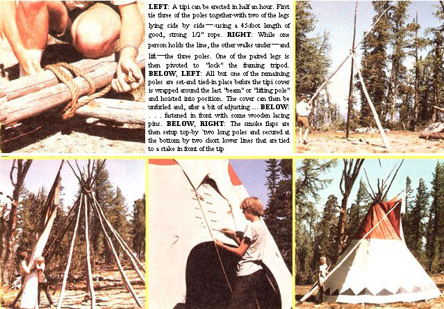

Chet Rideout learned - during six months on a Montana mountaintop - that nothing beats...
A few summers ago I had the opportunity to be involved in a mountain goat research project. Needless to say, I was excited by the prospect of spending half a year in the wilds of Montana ... but I did foresee one serious problem. My assistant and I planned to live-from summer through early winter-on top of an 8,660-foot peak ... but we weren't sure just what in blue blazes we were going to live in!
I studied the alternatives and rejected everything from "space age" tents (too cramped) to geodesic domes (not practical) to log cabins (too permanent ... suppose the goats moved?). No, we had to have something roomy, portable, inexpensive, easy to build, and able to adjust to a wide range of temperatures. In short, what we needed was a tipi!
Most folks will probably be surprised-as I was-to learn that the best movable shelter ever devised was perfected hundreds of years ago by the Plains Indians of the American Southwest. But the more I looked into the subject, the more convinced I became that-although they look like uncomplicated structures-tipis are actually more precisely designed than most of the "high technology" houses that are being built today!
As Caleb Clark, the old trapper in Ernest Thompson Seton's Two Little Savages, said: "Ye kin live in it forty below zero and fifty 'bove suffocation an' still be happy. It's the changeablest kind of a layout for livin' in." And Caleb wasn't talking majority, either. A tipi can be snugged down to endure subfreezing winters or-with its skirts lifted-will keep its residents cool in roasting summer weather. Its conical shape sheds rain ... and withstands hurricane winds that would dislodge any tent (and a good many stone or brick homes!). And the Indian dwelling will hold the heat-but not the smoke -of a toasty f ire.
I was also surprised to discover how spacious the cone-shaped homes are. My fellow -goater"' and I found we had plenty of room in our 16-foot-diameter shelter. In fact, on occasion we had five people bedded down 'round the fire ... without a single crowding problem. And these practical accommodations have another, more subtle, advantage: Living in a tipi provides a unique, at-one-with-nature experience. A cone dweller is in touch with-and yet shielded from-all the changing whims of weather. Tipi walls let the sun illuminate the interior by day ... and provide a curved screen for firelit shadow dances at night Chipmunks may perch on the shelter's poles , violets sprout from its floor, or moonlight stream through the smoke hole-mixing with the glow of a fading fire-and form a sight too beautiful for words. Little wonder the Indians (who revered nature) considered a tipi a temple as well as a home.
As you can imagine, the construction theories behind this amazing dwelling weren't "built in a day". The " modern" tipi is the result of a Ong trial-and-error development ... which produced three features that make this structure a real standout among functional shelters.
The tipi's first-and central-architectural earmark is ts shape. The base of the building's cone is not circular ... but oval! This egglike contour (with As wide back end toward the prevailing wind) is quite sturdy and galeresistant. The oval design also means that the fire-and the smoke holecan be placed in the front part of the tipi. By moving the blaze forward, tipi residents obtain more living (and standing) space inside We dwelling. More important, though, the "front room" fireplace means that-because the smoke hole doesn't have to open or shut around the poles-the top opening can be completely closed (once the fire is extinguished) during unusually strong rainstorms,
Actually, tipi dwellers can stay dry in most showers-even with the hole open-because o f the structure's second design innovation: the smoke flaps. These two sheets of material (we on either side of the "exhaust'' hole) do more than just close over the top opening. When set quartering downwind, the flaps stop slanting rain from entering the home ... and provide draft for the fire as well!
The third crucial feature of a tipi's design (and one that can't be seen from the shelter's outside) is a six-foot-tall liner that's hung around We entire interior of the conical home. This dew cloth has several functions. For one thing, it keeps the rain that runs down the poles (and any moisture that condenses on We main canvas) away from the central living space. Furthermore, because the liner extends all the way to the ground (the outside cover does not), air can run up the sides of the tipi and out the smoke hole ... greatly improving the fire's draft. Finally, the wall covering acts as a perfect warming-and coolling-insulation layer. As a matter of fact, tipis would-without their liners-be drafty, damp, sooty, hot in summer, and cold in winter. . . sort of like conventional tents.
Of course, it isn't quite as easy to pitch a tipi as it would be to throw together one of the more common backpacker's shelters made of aluminum ples and nylon. Some how-to knowledge is vital to anyone attempting to erect-or fabricate-one of these versatile dwellings, but I'm not going to go into the subject in detail ... for two reasons: [1] The definitive tipi bookReginald and Gladys Laubin's The Indian Tipi-is readily available and should be consulted by anyone who wants to learn more about this sort of shelter. And [3] a very detailed build-your-self guide has a Ready been published in-would you believe?-pag es 29-40 of MOTHER NO. 1!
However, I can't resist telling you some of what my co-worker and I learned-and experienced-during our half-year in a mountain top tipi.
We made our liner (out of six-foot muslin sections) and cut our own pine poles (12 for the fame of the 16-foot dwelling, and two to control the smoke flaps ... but-I confess-we bought our tipi cover. The $200 "wrapper" was made of 12-ounce duck canvas (lighter, 8-ounce duck will do) and weighed about 45 pounds.
My partner and I had little trouble backpacking the cover and liner up to " goat country". But erecting the tipi once we go there was another matter entirely! I had been told that it only takes about half an hour to pitch one of these shelters ... if the "builders" know what they're doing! However, we soon found that a few trial runs were necessary to get the knack of assembling the dwelling correctly. When my assistant and I were ready to set up our initial base camp, we followed the instructions in The Indian Tipi right down to the letter ... but-even so-I was sure glad it didn't rain that first night out.
The basics of tipi construction are as follows: First join the tops of three stout poles (in a two-together, one-alone pattern) with a 45-foot length of half-inch rope. Then stand the legs up, and twist one of the two coupled poles wound to unlock the supporting tripod. Next, lay all the ohm fame poles (except one) compactly in the notches of the three main beams. Wrap these poles with the rope and anchor the tipi-securing line to a wooden peg in the center of the shelter.
After the stake fixed in the ground, drape the tipi cover around the one "extra" support and lay this "lifting pole" in place against the others. Unfurl the canvas ovw the wooden skeleton and fasten the ends of the cover together in front with "lacing pins" (sticks or dowel rods). With that out of the way, all you have to do is use two long posts to set your smoke flap% hang your liner on the tipi's inside ... and move in.
Actually, we soon got pretty handy at pitching a tipi (if I do say so myself) and at just about every other aspect of the conical living" as well! My assistant and I encountered one major-and aggravating-problem, however: our fire. The Laubins were able to keep toasty at -23°F with just a small blaze . . . and to rekindle the dames each morning (still snug in their sleeping bags) by throwing a handful of shavings and kindling on the still-glowing coals. But those folks burned hardwood! We, on the other hand, were stuck with a choice of pine, fir, or larch ... and the smoky, quick-burning-and poorheating-softwoods gave us a lot of trouble.
We dealt with our smoke problem by employing a modern Indian trick ... we buried a tin-can pipeline from the mouth of the fireplace to the outside of the tipi. That air intake made the blaze draw more strongly and helped clear out the haze. But, in order to really get some heat in our home when the freezing weather came on, we had to resort to white men's methods ... and pack in an old sheet-metal stove. We also ran a small vertical stack up toward the smoke hole, but still had to keep the tipi flaps wide open to get rid of the heater s exhaust". And let me tell you, during one three-foot November snowfall, the gaping smoke hole became a real disadvantage!
To tell the truth, if I had to winter in a tipi-with only softwood fuel-again, I'd abandon even more of the authentic Indian ways and figure how to run a stovepipe chimney out through the wall! (The Laubins' native American friends had a lot of winterwarming tricks. They added an extra lining, stuffed the first liner-to-cover gap with hay insulation, built a 12-foot-tall windbreak around the tipi, and even added an ozan ... an interior "raincoat" that was almost like a tipi within a tipi. But I'll bet every one those traditional cone-dwellers was burning hardwood!)
I probably shouldn't gripe about our fire problems, though. After all, we were able to stay warm on the peak of a snowed-in mountain (if we'd been living in a NO, we couldn't have had any inside fires at all!). And-as I said before- are about the best possible semi-permanent dwellings ... and can make good full-time homes as well!
In fact, back in 1842-when John Charles Fremont tried to recruit Kit Carson to guide the explorer's first expedition-ol' Kit refused to go ... unless he could bring along a tipi. In the course of my six months on a Montana hilltop, I learned just why that famous tracker wanted one of the Indian dwellings: Ol' Kit-and generations of the original Americans-knew how to live in style.
EDITOR'S NOTE: The Indian Tipi is available for $1.95, plus 95 cents shipping and handling, from Mother's Bookshelf. MOTHER NO. 1-and other back issues of this publication-be purchased for $2.50, plus $ 1.00 shipping and handling per order, ton, THE Mother Earth News (restricted) . (Please address all mail orders to P.O. Box 70, Hendersonville , North Carolina 28739.)
And-if you want to buy one of these Indian homes-several tipi-making companies have advertised in MOTHER's classified section. Our own favorite shelter-stitcher is a cooperative group that lives in what it builds: NOMADICS, Dept. TMEN, 17611 Snow Creek Road, Bend, Oregon 97701,(503) 389-3980.
|
 |
|
|